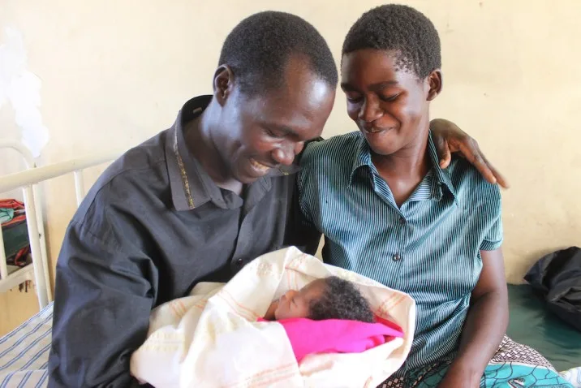

Expanded Nursing Uganda Explanation
Male involvement in RH should be reviewed through safe maternal and newborn assessment, early recognition of danger signs, respectful communication and timely referral. Connect the definition to vital signs, bleeding, fetal or newborn wellbeing, patient education and local protocol requirements.
01 **MALE INVOLVEMENT IN REPRODUCTIVE HEALTH SERVICES**
This can be in the form of seeking and sharing reproductive health information and services with their partners and friends. Sharing domestic chores and child rearing responsibilities is another form of male involvement, joint decision-making between men and their partners will improve the utilization of family planning, STI and EMTCT services.
Male involvement is embedded in the International Conference on Population and Development Program of Action which includes male responsibilities and participation as critical aspects for improving reproductive health outcomes, achieving gender equality, equity and empowering women. This mandate contributes to broadening the concept of gender so that it now includes men.
Male involvement is critical in the reduction of maternal and infant mortality and morbidity in Uganda. Culturally men are the decision-makers in Uganda. Many women are not empowered (decision and economically) to seek health care without consulting their spouses. Some recognize danger signs during or puerperium but wait for their spouses to return home and consent to their seeking for health care. The decision on where to seek care primarily depends on the spouse and his relatives. Evidence from maternal death audits shows that this delay has contributed to the high maternal and infant mortality and morbidity rates in Uganda.
- Decisions to keep the family healthy and seek care involve gender power roles
- Where men control household resources indirect costs of care seeking are at their discretion
- Control of STDs/HIV is a key R.H issue for men, who are often involved in high risk behaviour
- Decision on number of children is often dictated by men
- SRH issues involve an emotional journey and both men women need the emotional support
- Since men control the resources, women often have to explain why they have go to facilities
- Preventive services are often harder to justify than emergencies that men need in equal measures are inaccessible to them
Men have sexual and reproductive health problems which need to be addressed. Conditions of the male reproductive system including; – HIV/AIDs, fertility problems, midlife concerns, such as andropause and sexual dysfunction. Serious conditions include non- malignant genitor-urinary conditions and malignancies of prostate, testicles and genitor-urinary organs.
Vulnerability of males to SRH problems, their roles and responsibilities in prevention and care, including the prevention of gender based violence, are important aspects of a gendered approach to prevention interventions. Empirical and anecdotal evidence indicates that often, cultural beliefs and expectations of manhood or masculinity encourage risky behaviour in men. Masculinity requires males to play brave by not seeking help or medical treatment if they are faced with ailments including HIV/AIDs. Violence against women is more common and arises from the notion of masculinity based on sexual and physical domination over women. Gender based violence is a cross-cutting issue in all the sectors, exists within family and community spaces, and is entrenched within the existing ethno-cultures and its consequences are grave.
In the past, men’s involvement has sometimes been opposed by women’s health advocates, who understandably fear that adding these services will damage the quality of women’s services and create additional competition for already scarce resources. However, adding programs for men can enhance rather than deplete existing programs if the designers of these programs carefully integrate them into the existing health care structure in a way that benefits both women and men.
Both the 1994 International Conference on Population and Development in Cairo and the 1995 Fourth World Conference on Women in Beijing endorsed the incorporation of reproductive health services that include men, mandating that men’s constructive roles be made part of the broader reproductive health agenda.
In fact, neglecting to provide information and services for men can detract from women’s overall health. For example, men who are educated about reproductive health issues are more likely to support their partners in decisions on contraceptive use and family planning, support that may be essential if women are to practice safe sex or avoid unwanted pregnancy. Moreover, if men are knowledgeable about reproductive health issues and can communicate about them with their partners, they are more likely to be supportive during pregnancy and may make better health care decisions: for example, by ensuring that their partner receives emergency obstetric services when needed, rather than delaying recourse to such care. The effect of men’s attitudes and behavior on women’s health is perhaps most obvious in regard to the pandemic of AIDS and other STDs. Programs that educate, test and treat only one partner will not be effective in safeguarding the continued health of both. Men need to share the responsibility of disease prevention, as well as the risks and benefits of contraception.
02 **Importance of Male Involvement**
Involving men in reproductive health services benefits men and women, community and the service provider
** Reasons for Involving Men in Reproductive Health**
- Provides male support for female actions related to reproduction and respect for women’s reproductive and sexual rights
- Increases access to male contraceptive methods and hence helps on expanding the range of contraceptive options
- Promotes responsible and healthy reproductive and sexual behavior in young men
- Involves men with their spouses during counseling and other FP/RH information
- Helps in preventing the spread of HIV/AIDS and STDs
- Helps inform men of the ill effects of men’s risky sexual behaviour on the health of women and children
- men approve of family planning and hence supporting women’s contraceptive use
- men make decisions that affect women and men’s health
- demands from women for more involvement
- involving men in reproductive health is to use the forum of reproductive health programmes to promote gender equity and the transformation of men’s and women’s social roles
Factors limiting male participation in reproductive health
- Primary health center (PHC) programs not geared to meet men’s needs
- Unfavorable social and cultural climate. Cultural factors have limited men’s abilities to take an active role in family planning practice and reproductive health decision making.
- Services aimed at women and children . Most family planning and reproductive health services are designed to meet women‘s or children‘s needs and, as a result, men often do not consider them as a source of information and services. Many may be inconvenient or unwelcoming to men, and providers may not have the training or skills necessary to meet men‘s reproductive health needs. Men also may be embarrassed about visiting a facility that primarily serves women.
- Limited number of male contraceptives available . As mentioned above, available male methods are limited to condoms, natural family planning, vasectomy, and withdrawal. Like contraceptives for women, each of these methods has advantages and disadvantages and each potential client will have to decide for himself whether a particular method will meet his needs. While research is ongoing on new methods for men (including hormonal injections and implants), it is unlikely that a new method will be widely available for several years.
- Rumors and misinformation . Because of the general lack of access to accurate information about male contraceptive methods, many men and women may not know how to use them correctly or may have misperceptions and fears that prevent them from using the methods. For instance, men may be un- willing to consider using vasectomy because they equate it with castration or believe that it leads to impotence; similarly, they may be unwilling to use condoms because they believe condoms will reduce sexual satisfaction or cause an allergic reaction.
- Provider bias against male methods. Providers also may have misconceptions or biases about male methods or men‘s roles in family planning. As a result, they may not present information about male methods or assume that men are not interested. Concerns about the lower effectiveness of some male methods can be addressed through counseling about correct and consistent use as well as by offering emergency contraceptive pills to users as a backup in case condoms are not used properly or break.
- Unfavorable social or religious climate. In societies where sexual matters are not discussed openly, men may feel uncomfortable talking about their family planning needs and sexual concerns with their partners and with health educators. Young men may face particularly strong social pressures that prevent them from seeking reproductive health information and services. In addition, some men may believe that practicing
- contraception is contrary to the teaching of their religion. Priority given to women‘s health services. Many programs are reluctant to invest time and money to reach men with information and services when their female clients have significant unmet health and family planning needs.
- PHC service providers are mostly female
- Priorities to women and child care services
- Health workers attitude were some Providers have bias against male involvement
- Lack of information and knowledge
- Limited communication between spouses about FP needs
- Health centre resource constraints such as lack of enough male H/W, lack of male clinics
- Psychological factors (mindset and shyness of men)
- Difficult reaching couple with health information before pregnancy
03 **Reproductive Health Needs and Services for Men (Male reproductive health needs)**
- Information:
- Basic sexual and reproductive health education ****
- Genital health and hygiene ****
- Healthy relationships ****
- Pregnancy prevention ****
- STI including HIV ****
- Fatherhood ****
- Where and how to obtain other services (violence, sexual abuse, genetic counseling etc.)
- Contraception
- Reproductive physiology
- Sexuality
- Pregnancy
- Birth preparedness
- Male reproductive cancers
- Sexual and gender based violence
- Fertility and infertility ****
- Skills:
- Pregnancy and STI prevention and sex/sexual skills ****
- Fatherhood skills ****
- Preventive health care services:
- Sexual and reproductive history ****
- Cancer screening ****
- Substance abuse screening ****
- Mental health assessment ****
- Physical examination ****
- Links to other services, if needed ****
- Clinical diagnosis and treatment
- Testing for STIs, including HIV ****
- Diagnosis of and treatment for sexual dysfunction ****
- Fertility evaluation ****
- Contraceptive services (vasectomy) treatment of urologic disease: vasectomy reversal ****
04 **Social and Reproductive Health Responsibility of Men**
- Discussing contraceptive with the partner
- Discussing and utilizing STI/HIV screening services with partners
- Escorting partners to antenatal care, delivery and postnatal care services
- Men should only marry partners who are 18 years and above
- Abstain from sex until marriage
- Use condoms to prevent STI/HIV and unwanted pregnancies
- Have good relationship with partner especially during pregnancy, labor and puerperium
- Provide moral and financial support to the partners during pregnancy, child birth and postnatal
- Provide support to the partner for infant feeding choices
- Help bringing up children
05 **Social Norms, Beliefs, Practices and Taboos:**
- Promiscuity
- Power imbalances where male dominance is the norm
- Inadequate dialogue(lack of communication between spouses)
- Inadequate participation of men in child care
- Assigned roles due to gender biases example men do not cook therefore cannot assist their wives during pregnancy
- Early marriage is culturally accepted
- Wife inheritance
- Polygamy
- Competition among wives
- Poverty
06 **Strategies to Increase Male Involvement in Reproductive Health**
- Working with young men to influence gender biases for better reproductive health (e.g. in school)
- Integrate the desired services to address needs of men in the existing services
- Improved services at existing clinics.
- Sensitize the general community to re-address gender biases which have negative impacts on reproductive health
- Build capacity of health workers to involve men in reproductive health services
- Develop information, education and communication and advocacy materials, address male involvement/responsibilities in reproductive health services.
- RH information and services should focus the couple rather than the individual.
- Remove myths about condom and vasectomy.
- Service providers to be sensitized for men’s reproductive health needs.
- In RH health clinics, a arrangement health services may increase the male clientele.
- Separate clinic for males.
- Workplace services.
- Community-based services.
- Commercial and social marketing.
- Increase contraceptive choice for men.
- Train providers about male FP/RH needs.
- Culturally appropriate messages
- Male health workers
- Engaging different institutions such as MoH and NGOs
- Develop guidelines on male involvement in RH
07 Nursing Uganda Clinical Lens
Use Male involvement in RH as a practical nursing topic, not only a memorized definition. Read the topic through the safety of two patients: the mother and the fetus or newborn.
- What to understand first: define male involvement in rh, identify the normal or expected pattern, then explain what changes when the patient is unwell.
- Why it matters in care: the nurse must recognize risk early, explain findings clearly, document accurately and know when to escalate.
- How to revise it: connect each point to assessment, nursing diagnosis or care problem, intervention, rationale and evaluation.
08 Assessment Guide
- Maternal vital signs, bleeding, pain, contractions, uterine tone and danger signs.
- Fetal or newborn wellbeing, feeding, temperature, breathing and activity.
- History of pregnancy, parity, medications, allergies, investigations and referral risks.
09 Nursing Priorities, Rationales and Outcomes
- Recognize danger signs early and escalate without delay.
- Provide respectful communication, privacy, infection prevention and clear documentation.
- Teach the mother what to monitor at home and when to return urgently.
The rationale for these priorities is patient safety: nursing actions should prevent deterioration, reduce discomfort, support recovery and create clear evidence for the next caregiver.
- Expected outcome: Mother and baby remain stable, danger signs are acted on early, and the family understands follow-up instructions.
10 Patient Teaching and Revision Check
- Explain male involvement in rh in simple language the patient or caregiver can repeat back.
- Teach warning signs, medicine or follow-up instructions, hygiene or lifestyle points where relevant.
- For exams, prepare a short answer using: definition, causes or risk factors, signs, assessment, management, complications and prevention.
- For ward practice, document baseline findings, actions taken, patient response and the plan for review.
Illustrations and Diagrams (4)



Related Video Lectures
Watch nursing lecture videos on YouTube for this topic. Opens in a new tab.
Watch on YouTubeExternal link: YouTube may use its own cookies and terms. Nursing Uganda is not affiliated with YouTube.